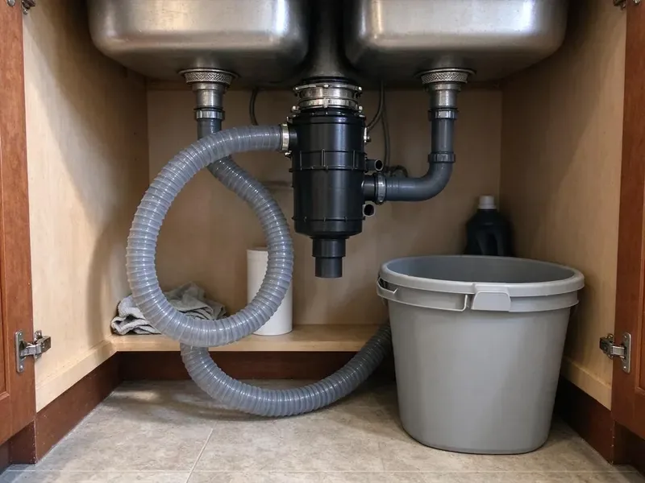

Garbage Disposal Repair in Woodland, CA
Get your garbage disposal grinding again in Woodland, CA with a plumber who carries the parts to fix it.
- Licensed Plumbers
- Straight Repair or Replace Advice
- Flat Price Up Front
- Guaranteed Labor
Same-Day Garbage Disposal Repair in Woodland, CA
We try the simple fixes first, so you do not pay for a new unit you do not need.
Prompt Disposal Repair for Kitchens in Woodland, CA
FBL Plumbing knows a dead disposal stops the whole sink in a Woodland kitchen. The bowl fills and stays full. Our order is breaker, switch, reset button, then motor, since the inexpensive causes show up far more often than a dead motor.
Some of what we do:
- Fixing leaks at the flange and connections
- Clearing stubborn disposal jams
- Clear clogged disposal drains and trap arms

Additional Kitchen Plumbing Services in Woodland, CA
Our kitchen plumbing services in Woodland, CA cover sinks, disposals, dishwashers, and grease traps so your kitchen stays clean, safe, and fully functional.


Customers
Why Choose FBL Plumbing for Garbage Disposal Repair in Woodland, CA?
Every repair we make follows Northern California plumbing code for traps, dishwasher connections and drain layout. Code shortcuts cause clogs. A disposal draining into a trap that sits higher than the outlet, or into a trap arm that is too long, will back up no matter how good the unit is.
- Fast Response, Same-day disposal visits happen on most weekdays.
- Clear Pricing, You get a flat quote before we start, with no add-ons later.
- Housing Know-How, We know how house age and local water affect a disposal's life.
Citywide Coverage
Every neighborhood in Woodland is covered for disposal repair, from older homes near downtown to new subdivisions. We are usually close by. That keeps response times short, and it means a jammed disposal does not have to sit full of water overnight while you wait for a plumber.
Experienced Team
Each technician at FBL Plumbing is trained to diagnose disposals in a set order. Power, then reset, then jam, then motor. Following that order keeps them from replacing a good unit that only needed a new switch or a reset after a long stall.
Safety-First Approach
We follow local Northern California plumbing codes and the manufacturer's guidelines on every disposal repair. We always check the ground. Without a ground, a disposal in a wet cabinet can shock whoever touches the sink, so we verify it before we finish.
Trusted Certified Woodland Plumbing Services Professionals
At FBL Plumbing, we take pride in licensed, certified plumbing services throughout Woodland, CA. Credentials matter in this trade. Our plumbers hold recognized industry credentials, and they follow strict safety and quality rules on every repair, installation and maintenance call we run.
Call Us Now PHCC Plumbing Contractor Recognition
PHCC Plumbing Contractor Recognition Better Business Bureau (BBB) Accreditation
Better Business Bureau (BBB) Accreditation Angi Certified Pro
Angi Certified Pro ISO 9001 Quality Management Certification
ISO 9001 Quality Management CertificationDisposal Repair in Woodland, CA: The Details
Commercial Disposal Repair in Woodland
Restaurant disposals run 1 to 5 horsepower and often have a separate control panel and solenoid water valve. When one stops, the dish line backs up fast. We check the controls first. A bad solenoid or tripped overload in the panel kills the unit as fully as a jam does, but it gets fixed far faster.

Cost-Effective Disposal Repair in Woodland, CA
A disposal repair that costs half of a new unit rarely makes sense, and we will say so. Many fixes are cheap. A reset, a cleared jam, a new switch or a resealed flange usually costs far less than a new unit and can keep a younger disposal going for years.
Leaking Disposal Fix in Woodland, CA
When the drip starts at the top, the putty under the sink flange is usually dried out. We drop the unit, pull the flange, clean off the old putty and reset it with fresh putty and new gaskets, then hang the disposal back up. That fixes most top leaks. Side leaks are usually the discharge gasket or the dishwasher hose clamp.
Disposal Reset and Electrical Repair in Woodland
When a disposal will not turn on at all, the thermal overload may have tripped or the switch may be bad. The reset, breaker, wall switch and wiring all get tested, along with air switches and the magnetic lids on batch-feed units. Most are simple fixes.
Slow Draining Disposal Repair in Woodland, CA
Good grinding but slow draining usually means the discharge tube or the trap arm is packed. Rice and coffee grounds are the usual culprits. The trap comes off, the tube and arm get cleared with a properly sized cable, and we confirm the arm drops about a quarter inch per foot.
Grinding Noise Repair in Woodland
Loud metal-on-metal sounds may mean a loose mount, a foreign object or worn impellers. We inspect the chamber, tighten the mounting ring and remove any debris, then run the unit empty to hear whether the motor itself is making the noise. Bad bearings mean replacement.
Noisy Disposal Repair in Woodland
Grinding, rattling or a hum that sounds rough all point to something inside. Loose mounting rings rattle too. We check the mount, then look for debris, then run the motor empty, since a whine with an empty chamber means the bearings are going.

Emergency Disposal Repair in Woodland, CA
If water is reaching the floor, that comes first. Turn the disposal off, stop the dishwasher if it is running, and close the angle stops under the sink so the faucet cannot add more water to a backed up bowl. Then call us. We can usually stop the leak the same day and either repair the unit or quote a replacement before we leave.
Nearby Disposal Repair in Woodland, CA
When your disposal quits, a plumber close by makes all the difference. Our team works in Woodland every day. We usually arrive the same day with common parts and a couple of replacement units in case the old one is past fixing.
Searching for disposal repair near you in Woodland, CA? FBL Plumbing has plumbers who live and work nearby, so a same-day visit is usually possible. Keep it switched off until we get there. Flipping the switch on a jammed unit over and over can burn out the motor and turn a quick fix into a new disposal.
FBL Plumbing at a Glance
- Licensed and insured plumbers serving Woodland, CA
- 24/7 emergency service with same-day scheduling
- Clear written estimates, no hidden fees
- 4.8-star rated by 834+ Northern California customers
Woodland Map
Woodland Information
- Population
- 61,123
- Area codes
- 530/916/707
- Service area
- Woodland and communities within 40 miles
- Nearby
- Davis, West Sacramento, Sacramento, Arden-Arcade
Disposals in Woodland, CA usually give eight to twelve years with reasonable care, and a quick repair often buys several more. Water hardness in Northern California varies a lot by source, with snowmelt-fed systems running soft and many inland groundwater systems running mineral-heavy.
Expert Services
Call FBL Plumbing for honest, reliable plumbing from people who know the trade in Woodland, CA.
Our Specialized Plumbing Services in Woodland, CA
At FBL Plumbing, we handle the full list of plumbing services across Woodland, CA. We go from leak detection all the way to full system installations, for homes and commercial buildings, and we do it quickly at a fair price. Explore our core services below:


Our Garbage Disposal Repair Routine in Woodland, CA
Here is how we get your disposal back in action.
Call Us
Call (669) 319-2034 and describe the hum, leak or silence. We set a time that works for you.
Diagnose and Price
A licensed FBL Plumbing plumber works through power, reset, jam and motor and gives you a flat price.
Make the Repair
Once you approve, we fix it with genuine parts and the manufacturer's specs.
Frequently Asked Questions About Garbage Disposal Repair in Woodland
Clearing jams, fixing flange leaks or replacing a switch usually costs $125 to $300. When replacement makes more sense, an installed unit usually costs $275 to $700 based on motor size and features. Close calls get both prices.
A leak from the bottom usually means the internal seal failed. It is not a serviceable part, which means replacing the unit.
The most common are InSinkErator, Waste King, Moen, KitchenAid and GE. Flange kits, gaskets and switches for those brands ride on the truck, and parts for others usually arrive in a day or two.
Figure 30 minutes to an hour for most. A replacement usually takes one to two hours.
Stringy foods like celery, potato peels and corn husks tangle in the impellers, and pits or bones wedge against the grind ring. A flat trap arm makes it worse. If the trap arm does not fall toward the wall, ground food settles in it and backs up into the chamber, which feels like a jam even when the unit is fine.
The flywheel is usually jammed. Turn off the power and do not put your hand inside, since the grind ring is sharp and the motor can restart if the reset button pops back in. We can free it safely.
It protects the motor from overheating. Frequent trips mean the unit is overloaded, jammed or wearing out.
Usually not. Clearing jams, swapping switches and resealing flanges usually need no permit, while new circuits or drain changes may, depending on the jurisdiction. We check before we start.
Hear From Customers Who Hired Our Plumbing Experts

Monica A.
Our water bill nearly doubled in one month with no change in how we used water. The tech checked the meter, heard the leak under the hallway with his equipment, and opened a hole about a foot square. Fixed the same day.
Slab Leak Repair · Arden-Arcade, CA
Emily R.
The shutoff valve under our kitchen sink snapped off in my hand on a Sunday morning. FBL Plumbing had someone out by early afternoon. He replaced both angle stops with quarter turn valves and showed me where our main shutoff was, which I honestly did not know.
Plumbing Repair · Sacramento, CA
Marcus H.
Grease from the fryer line kept clogging the kitchen drain at my diner. FBL Plumbing hydro jetted the line after closing, showed me the buildup on camera, and set us up on a quarterly cleaning so it does not catch us on a Friday again.
Drain Cleaning · Antelope, CA
Brian W.
I smelled gas behind the dryer and called right away. The plumber found a corroded flex connector, replaced it, and pressure tested the whole line before turning the gas back on. He let me watch the gauge hold steady for fifteen minutes.
Gas Line Repair · Sacramento, CAGreg S.
I manage a small strip center with six tenants. FBL Plumbing handles our annual backflow testing and fixed a recurring clog in the shared sewer line that had been backing into the nail salon. Their reports come in clean and on time.
Commercial Plumbing · West Sacramento, CAJessica T.
We were adding a gas range in a kitchen remodel and needed a new line run from the meter. The plumber pulled the permit, ran the pipe through the crawl space, and had it inspected and approved within the week.
Gas Line Repair · Arden-Arcade, CA